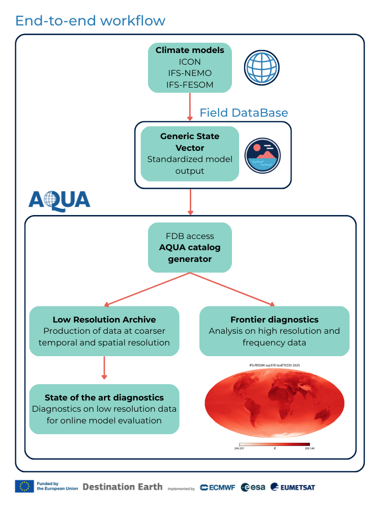

Currently I'm a Researcher at Politecnico di Torino since December 2025, working in Climate Science with the Climate Change Adaptation Digital Twin in the Destination Earth project and the EPOCHAL project for paleoclimate modeling.
The Application for QUality Assessment (AQUA) is a model evaluation framework designed for running diagnostics on high-resolution climate models, specifically for Climate DT climate simulations being part of Destination Earth activity. The package provides a flexible and efficient python3 framework to process and analyze large volumes of climate data. With its modular design, AQUA offers seamless integration of core functions and a wide range of diagnostic tools that can be run in parallel.
I am one of the main developers of AQUA, and I am responsible for the implementation of the core framework and the development of new diagnostics. The code is already public and available on GitHub.

The code, as represented in the figure above, is already part of the operational workflow of the ClimateDT. Its usage is not limited to the ClimateDT, but offers a flexible framework that can be used to run diagnostics on any climate model.
EPOCHAL (Earth system modeling of PaleOClimatic HyperthermALs) is a PRIN project that aims to study the paleoclimate with the use of Earth system models. In particular, I'm working on the implementation of lower resolutions in the EC-Earth4 model, in order to be able to run long simulations of the paleoclimate. This requires appropriate modifications of the boundary, initial, and forcing conditions.
The low resolution version of the model will give to the paleoclimatic community a valuable tool to run simulation with a well tested and validated model, that will garantuee a continuous support and development in the future.